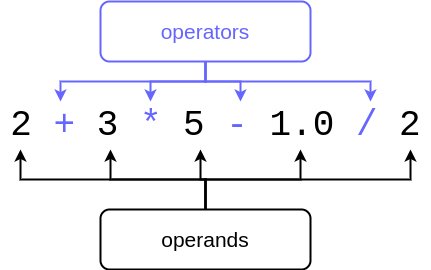

In the previous sections you’ve seen examples with basic arithmetics. In the following table you can see the most common arithmetic operators in Python, with examples:
| Operator | Purpose | Example | Result |
|---|---|---|---|
+ |
Addition | 2 + 4 |
6 |
- |
Subtraction | 10 - 2.5 |
7.5 |
* |
Multiplication | -2 * 123 |
-246 |
/ |
Division (floating point result) | 9 / 2 |
4.5 |
// |
Division (integer result) | 9 // 2 |
4 |
% |
Modulo | 9 % 2 |
1 |
** |
Exponentiation | 2 ** 3 |
8 |
The order of operations is familiar from mathematics: first calculate the exponents, then multiplication and division, and finally addition and subtraction. The order can be changed with parentheses.
For example this bit of code
print(2 + 3 * 3)
print((2 + 3) * 3)
prints out
A calculation usually consists of operands and operators:

The data type of an operand usually determines the data type of the result: if two integers are added together, the result will also be an integer. If a floating point number is subtracted from another floating point number, the result is a floating point number. In fact, if a single one of the operands in an expression is a floating point number, the result will also be a floating point number, regardless of the other operands.
Division / is an exception to this rule. Its result is a floating point number, even if the operands are integers. For example 1 / 5 will result in the floating point number 0.2.
Example:
height = 172.5
weight = 68.55
# the Body Mass Index, or BMI, is calculated by dividing body mass with the square of height
# height is converted into metres in the formula
bmi = weight / (height / 100) ** 2
print(f"The BMI is {bmi}")
This program prints out the following:
Notice Python also has an integer division operator //. If the operands are integers, it will produce an integer. The result is rounded down to the nearest integer. For example this program
x = 3
y = 2
print(f"/ operator {x/y}")
print(f"// operator {x//y}")
prints out
We have already used the input command to read in strings from the user. The same function can be used to read in numbers, but the string produced by the function must then be converted to a numeric data type in the program code. In the previous section we cast integers as strings with the str function. The same basic principle applies here, but the name of the casting function will be different.
A string can be converted into an integer with the function int. The following program asks the user for their year of birth and stores it in the variable input_str. The program then creates another variable year, which contains the year converted into an integer. After this the calculation 2021-year is possible, using the user-supplied value.
input_str = input("Which year were you born? ")
year = int(input_str)
print(f"Your age at the end of the year 2021: {2021 - year}" )
Usually you do not need to create two separate variables (like input_str and year above) to read a number value from the user. Instead, reading the input with the input function and converting it with the int function can be achieved in one go:
year = int(input("Which year were you born? "))
print(f"Your age at the end of the year 2021: {2021 - year}" )
Similarly, a string can be converted into a floating point number with the function float. This programs asks the user for their height and weight, and uses these to calculate their BMI:
height = float(input("What is your height? "))
weight = float(input("What is your weight? "))
height = height / 100
bmi = weight / height ** 2
print(f"The BMI is {bmi}")
An example printout from the program:
Let’s have a look at a program which calculates the sum of three numbers given by the user:
number1 = int(input("First number: "))
number2 = int(input("Second number: "))
number3 = int(input("Third number: "))
sum = number1 + number2 + number3
print(f"The sum of the numbers: {sum}")
An example execution of the program:
The program uses four different variables, but two would easily suffice in this case:
sum = 0
number = int(input("First number: "))
sum = sum + number
number = int(input("Second number: "))
sum = sum + number
number = int(input("Third number: "))
sum = sum + number
print(f"The sum of the numbers: {sum}")
Now all inputs from the user are read into the one and the same variable number. The value of the variable sum is increased by the value of the variable number each time the user inputs a new number.
Let’s take a closer look at this command:
sum = sum + number
Here, the value of the variable sum and the value of the variable number are added together, and the result is stored back in the variable sum. For example, if before the command the value of sum is 3 and the value of number is 2, after the command is executed, the value of sum is 5.
Increasing the value of a variable is a very common operation. As such, there is a commonly used shorthand notation which achieves the same result as the explicit summing up above:
sum += number
This allows us to write the above program a little more concisely:
sum = 0
number = int(input("First number: "))
sum += number
number = int(input("Second number: "))
sum += number
number = int(input("Third number: "))
sum += number
print(f"The sum of the numbers: {sum}")
In fact, we don’t necessarily need the variable number at all. The inputs from the user can also be processed like this:
sum = 0
sum += int(input("First number: "))
sum += int(input("Second number: "))
sum += int(input("Third number: "))
print(f"The sum of the numbers: {sum}")
Of course, it will depend on the context how many variables are needed. If it is required to remember each value the user inputs, it will not be possible to “reuse” the same variable to read different values from the user. Consider the following:
number1 = int(input("First number: "))
number2 = int(input("Second number: "))
print(f"{number1} + {number2} = {number1+number2}")
On the other hand, the above program does not have a named variable for storing the sum of the two values.
“Reusing” a variable only makes sense when there is a need to temporarily store things of a similar type and purpose, for example when summing numbers.
In the following example the variable data is used to first store the name of the user, and then their age. This is not at all sensible.
data = input("What is your name? ")
print("Hi " + data + "!")
data = int(input("What is your age? "))
# program continues...
A better idea is to use separate variables, with descriptive names:
name = input("What is your name? ")
print("Hi " + name + "!")
age = int(input("What is your age? "))
# program continues...